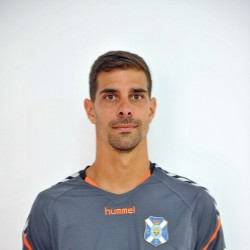
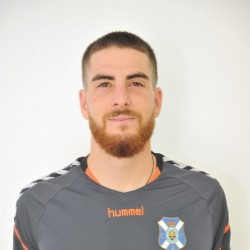
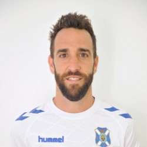
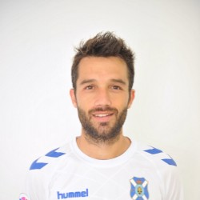
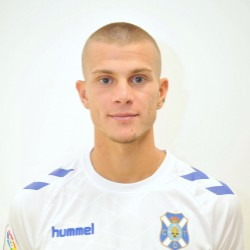
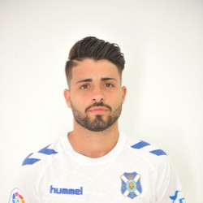

El Club Deportivo Tenerife es un club de fútbol español de la ciudad de Santa Cruz de Tenerife, en la isla de Tenerife (Islas Canarias), fundado el 21 de noviembre de 1912 con el nombre de Sporting Club Tenerife.
El equipo, que milita actualmente en Segunda División de España, ha jugado 13 temporadas en Primera División. Sus grandes hitos deportivos son dos quintos puestos en la Liga (1993 y 1996), la disputa de unas semifinales de la Copa del Rey contra el Celta de Vigo, la disputa de unas semifinales de la Copa de la UEFA contra el FC Schalke 04 (1997) y la conquista del Trofeo Joan Gamper, al derrotar al F.C. Barcelona por 3-1. Mantiene una intensa rivalidad con la Unión Deportiva Las Palmas, contra la que disputa el derbi canario.
Ocupa la posición 28 en la Clasificación histórica de la primera división española de fútbol, con 510 puntos, y según la IFFHS fue el 137º mejor equipo del siglo XX a nivel europeo.
| Presidente |
| Secretario técnico |
| Entrenador |
| Porteros |
| Defensas |
| Centrocampistas |
| Delanteros |
PresidenteNombre: Miguel Apellido: Concepción |
Director técnicoNombre: Alfonso Apellido: Serrano |
EntrenadorNombre: Joseba Apellido: Etxeberria |
|  Número: 25 Nombre: Dani Apellido: Hernández |
 Número: 1 Nombre: Carlos Apellido: Abad |
|  Número: 14 Nombre: Carlos Apellido: Ruiz |
Número: 21 Nombre: Jorge Apellido: Sáenz |
Número: 17 Nombre: Juan Carlos Apellido: Real |
 Número: 16 Nombre: Aitor Apellido: Sanz |
|  Número: 12 Nombre: Samuele Apellido: Longo |
 Número: 26 Nombre: Brian Apellido: Martín |